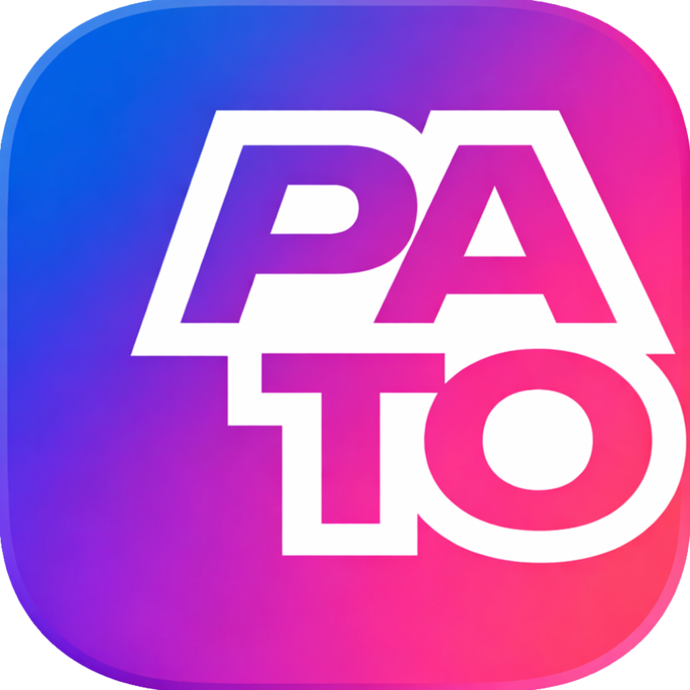
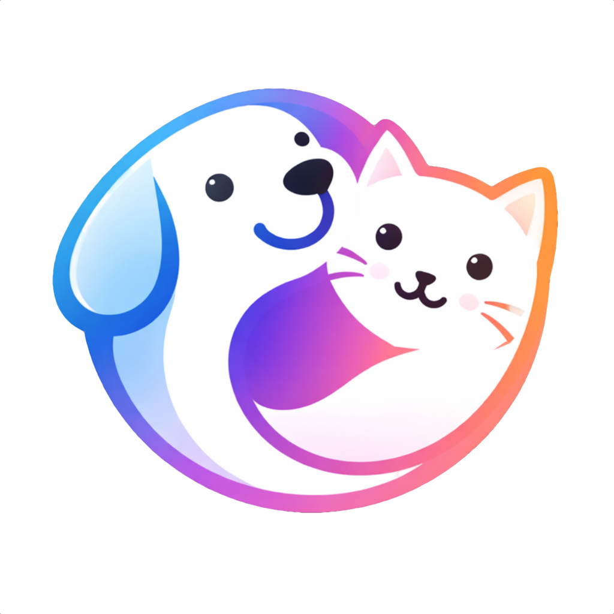
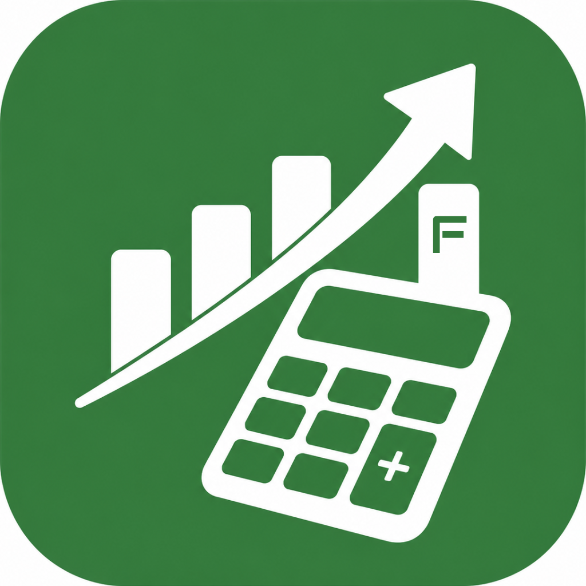
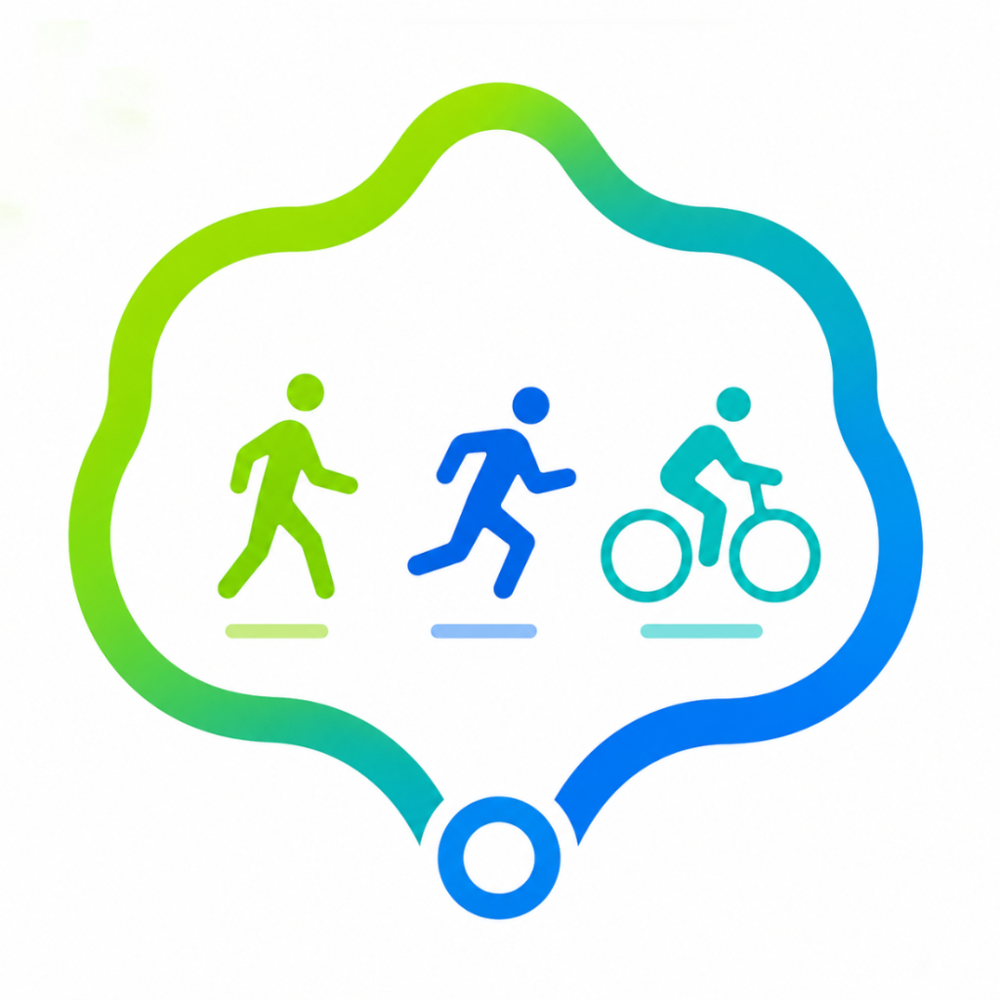

Un petit univers d’applications iOS imaginées entre créativité, simplicité, technologie et quelques promenades bien inspirées autour de Vertou.
Des applications simples, élégantes et pensées pour rendre service sans transformer l’iPhone en tableau de bord d’Airbus. Ici, le premium reste lisible, humain et légèrement espiègle.

Une nouvelle façon de lire et vivre l’univers du blog de Pato, avec une expérience plus fluide, plus personnelle et plus moderne.
Découvrir
Une application pensée pour accompagner la vie de vos animaux : santé, souvenirs, documents et moments précieux.
Découvrir
Comprendre plus simplement son épargne, ses rendements et les frais qui grignotent parfois les performances.
Découvrir
Générer des boucles de marche, course ou vélo autour de soi, pour redécouvrir son environnement autrement.
Découvrir